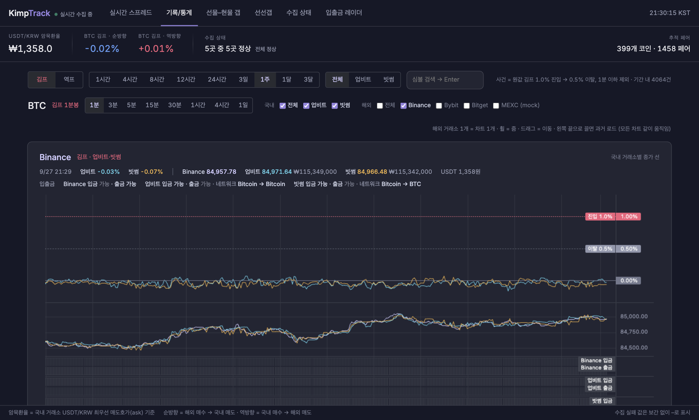

실시간 김프·역프, 실제로 옮길 수 있는지까지
KimpTrack(김프트랙)은 김프가 벌어진 코인과 그 코인을 지금 옮길 수 있는지를 한 화면에 보여 줍니다.
- 거래소
- 6곳
- 코인
- 400여 개
- 다시 계산
- 1초마다
국내업비트 · 빗썸
해외바이낸스 · 바이비트 · 비트겟 · OKX
지금 가장 큰 경로
출금과 입금이 모두 열린 경로 가운데 김프·역프가 가장 큰 곳을 이 자리에 보여 줍니다.
김프 히스토리로 분석하세요
1% 넘게 벌어진 순간과 그때의 입출금 상태를 모두 남깁니다.

지난 7일 김프·역프 사건
사건은 김프·역프가 1% 넘게 벌어져 1분 넘게 이어진 구간입니다.
건
지난 7일 동안 생긴 사건
- 김프 건
- 역프 건
- 지금 진행 중 건
최근에 끝난 사건
| 코인 | 경로 | 방향 | 최고 | 지속 | 끝난 시각 |
|---|
김프(김치프리미엄)와 역프란
같은 코인의 국내 원화 가격과 해외 가격(원화로 바꾼 값)의 차이입니다.
김프국내가 비쌀 때
역프국내가 쌀 때
김프(%) = (국내 원화 가격 ÷ (해외 USDT 가격 × USDT 원화 가격) − 1) × 100 역프(%) = (해외 USDT 가격 × USDT 원화 가격 ÷ 국내 원화 가격 − 1) × 100
- USDT(테더) 환산
- 은행 환율 대신 업비트·빗썸의 USDT 원화 호가로 해외 가격을 원화로 바꿉니다. 돈이 실제로 원화 → USDT 로 움직이기 때문입니다.
- 테더 김프
- USDT 자체의 김프입니다. 코인 김프는 은행 환율로 계산한 값보다 테더 김프만큼 작게(테더 역프면 크게) 나옵니다.
- 차익거래(아비트라지)·따리
- 코인을 옮겨 두 거래소의 가격 차이를 노리는 거래입니다. 표시된 김프에는 수수료와 전송 시간이 빠져 있어, 그만큼 남는다는 뜻은 아닙니다.
KimpTrack이 김프를 계산하는 방법
-
1. 수집
6개 거래소의 호가와 입출금 상태
-
2. 계산
매초, $1,000어치 체결 단가로
-
3. 기록
맨 위 호가 값은 전부, 큰 구간은 사건으로
-
4. 전달
바뀐 값만 곧바로 김프 표에
맨 위 호가가 아니라 $1,000어치 평균 단가
1,002.4원매도 호가 세 단을 채운 평균 — 호가가 얇은 코인일수록 김프가 작게 나옵니다
자주 묻는 질문
김프 사이트마다 숫자가 다른 이유는 무엇인가요?
쓰는 가격과 환율이 달라서입니다. KimpTrack은 가격 하나와 은행 환율 대신 $1,000어치를 체결한 평균 단가와 국내 거래소의 USDT 호가를 씁니다.
왜 $1,000 기준인가요?
모든 코인을 같은 금액으로 비교하려는 것입니다. 더 큰 금액을 옮기면 김프가 이보다 작아지고, 더 작은 금액이면 커질 수 있습니다.
환율은 무엇을 쓰나요?
업비트·빗썸이 각자 가진 USDT(테더) 원화 호가입니다. 김프는 USDT를 사는 쪽이라 매도호가, 역프는 파는 쪽이라 매수호가를 씁니다.
옮길 수 없는 경로는 어떻게 판단하나요?
보내는 거래소의 출금과 받는 거래소의 입금을 같은 네트워크로 확인합니다. 한쪽이라도 막혔거나, 확인하지 못했거나, 같은 네트워크가 없으면 옮길 수 없는 경로입니다.
가입이나 비용이 필요한가요?
아니요. 로그인이나 앱 설치 없이 웹에서 무료로 봅니다. 실시간 김프 표는 PC 화면에 맞춰 만들었습니다.
역김프와 역프는 같은 말인가요?
네. 국내 가격이 해외보다 싼 상태를 역프, 역김프, 역프리미엄이라고 부릅니다.